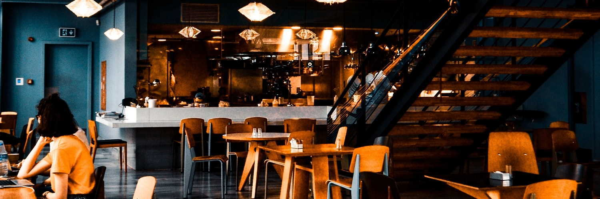

Welcome to the Haukai Restaurant
Where the food is just one part of the experience
Where the food is just one part of the experience
We specialise in Māori kai (food) in Kerikeri, Bay of Islands
Experience Te Ao Māori, (Māori world view) which acknowledges the interconnectedness and interrelationship of all living & non-living things
Having a karakia kai (blessing of the food) before eating and whakairo (carving) on display are just some of the Māori culture you will experience
Karakia kai
Whakapaingia ēnei kai (Bless this food)
Hei oranga mō ō mātou tinana (For the health of our bodies)
Mō ō mātou wairua hoki (And our spirits)
Āmine (Amen)